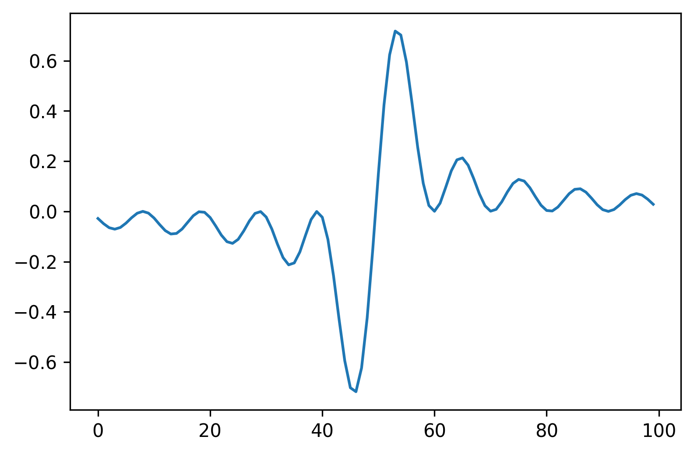

First post in HUGO
Introduction
Meta post about how I do it. I'm using org-mode inside emacs and Hugo.
Images from URL
Use the html export block from org mode. In order to override the theme css for images display I manually inserted the html with a different style="display: revert; max-width: fit-content;". (this depends on the theme you choose)


Graphs from interactive code blocks saved on /static/images
Using emacs-jupyter together with org-mode babel.
In order to use the generated graph from the code in the blog published with Hugu I did the following:
-
save the figure with source block header argument
:file ../../static/images/graph1.png.1 -
added also
:exports codeto avoid having a broken link in the html, which is automatically generated with ob-jupyter. -
inserted a link to the graph considering the folder structure after published with Hubo
[[file:images/graph.png]]
import matplotlib.pyplot as plt
import numpy as np
x=np.linspace(-15,15, 100)
fig = plt.figure(dpi=300)
plt.plot(np.sin(x)**2/x**2)
Graphs saved in the same folder as the post
This is the most convenient organization scheme.
I create a new folder for each post that will have pictures.
Inside this folder the post goes on a index.org file.
And the figures are generated automatically with emacs-jupyter, I just changed the default directory variable to (setq jupyter-org-resource-directory ".").
import matplotlib.pyplot as plt
import numpy as np
x=np.linspace(-15,15, 100)
fig = plt.figure(dpi=300)
plt.plot(np.sin(x)**2/x)
Dataframes from interactive code blocks
import pandas as pd
data = [[1, 2], [3, 4]]
DF = pd.DataFrame(data, columns=["Foo", "Bar"])
print(DF)Foo Bar 0 1 2 1 3 4
Updates
07/12/2020
Problems with standard hugo org-mode support:
-
There is no support for toc.
-
Images generated with ob-jupyter need to be manually saved to static and the link manually included
Trying ox-hugo
-
toc works
-
I have to wait it generate the markdown every time
09/12/2020
Not using ox-hugo anymore, too complicated for my workflow.
Toc works natively with org-mode using #+toc: t, I have not seen that documented anywhere else.
Footnotes
I manually created the images folder.